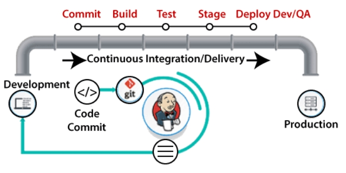
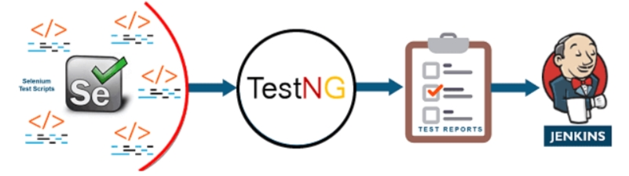

This phase involves the planning and coding of the software. The vision of the project is decided during the planning phase. And the developers begin developing the code for the application. There are no DevOps tools that are required for planning, but there are several tools for maintaining the code.
2) Continuous Integration:
This stage is the heart of the entire DevOps lifecycle. It is a software development practice in which the developers require to commit changes to the source code more frequently. This may be on a daily or weekly basis. Then every commit is built, and this allows early detection of problems if they are present. Building code is not only involved compilation, but it also includes unit testing, integration testing, code review, and packaging.

3) Continuous Testing:
This phase, where the developed software is continuously testing for bugs. For constant testing, automation testing tools such as TestNG, JUnit, Selenium, etc are used. These tools allow QAs to test multiple code-bases thoroughly in parallel to ensure that there is no flaw in the functionality. In this phase, Docker Containers can be used for simulating the test environment.

Selenium does the automation testing, and TestNG generates the reports. This entire testing phase can automate with the help of a Continuous Integration tool called Jenkins.
4) Continuous Monitoring:
Monitoring is a phase that involves all the operational factors of the entire DevOps process, where important information about the use of the software is recorded and carefully processed to find out trends and identify problem areas. Usually, the monitoring is integrated within the operational capabilities of the software application.
5) Continuous Feedback:
The application development is consistently improved by analyzing the results from the operations of the software. This is carried out by placing the critical phase of constant feedback between the operations and the development of the next version of the current software application.